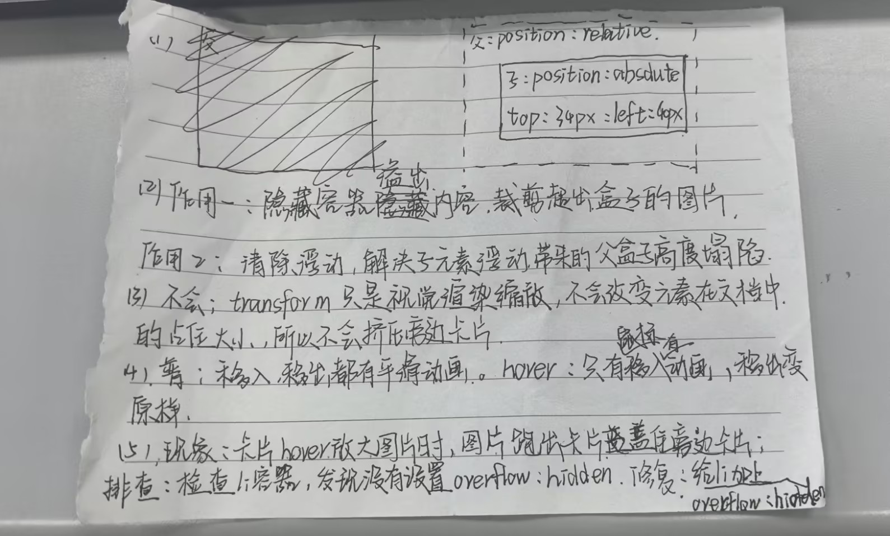

作业答案
第一部分：看代码找错
Bug1：图片放大跑出卡片，盖住旁边卡片
错误位置：.box li 样式，缺少 overflow:hidden
.box li{
width: 300px;
overflow: hidden;
}
Bug2：文字展开只有移入有动画，鼠标移出无过渡效果
错误原因：transition写在hover里面，需要移到普通img选择器
.box img{
width: 100%;
transition: all .6s;
}
.box li:hover img{
transform: scale(1.2);
}
Bug3：卡片布局排版错乱
错误位置：.box li，缺少position:relative（子绝父相）
.box li{
width: 300px;
overflow: hidden;
position: relative;
}
第二部分：补全代码
2.1 语义标签填空
- 页面顶部头部区域 → <header>
- 导航条 → <nav>
- 页面唯一主要内容区 → <main>
- 侧边栏附属内容 → <aside>
- 页面底部版权页脚 → <footer>
2.2 卡片动画补全
| 需要实现效果 | 填写关键CSS代码 / 答案 |
|---|---|
| 防止放大图片溢出li容器 | li添加属性：overflow:hidden |
| 子绝父相，让文字条定位在卡片底部 | li添加属性：position:relative |
| hover图片从原始大小放大到 scale(1.2) | 需要写哪两个选择器：.box img 、 .box li:hover img |
| 文字高度平滑展开，移入移出都有动画。transition写在默认还是hover？为什么？ | 写在默认状态；transition写在默认样式，移入移出都有过渡；写在hover仅移入有动画。 |
| 奇数卡片悬浮，文字铺满整张卡片 | 使用什么伪类选择器：:nth-child(odd) |
卡片效果演示（上图下文，hover图片放大+文字展开）
-
 卡片1
卡片1 -
 卡片2
卡片2 -
 卡片3
卡片3 -
 卡片4
卡片4 -
 卡片5
卡片5 -
 卡片6
卡片6
2.3 flex两栏布局填空
- 父容器开启flex：display: flex
- 设置两栏间隙8px的属性：gap:8px（禁止margin）
第三部分：手写原理简答（25分）

第四部分：扩展挑战（选做，15分加分）
- position:fixed固定在视口左下角
- 初始opacity:0.5半透明
- hover完全不透明，同时轻微放大
- 设置z-index保证按钮浮于页面内容之上